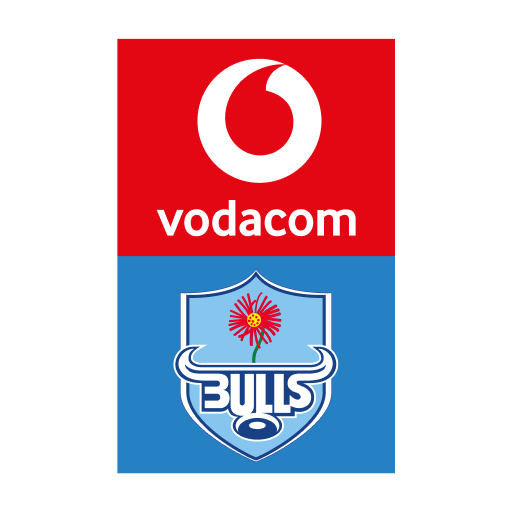
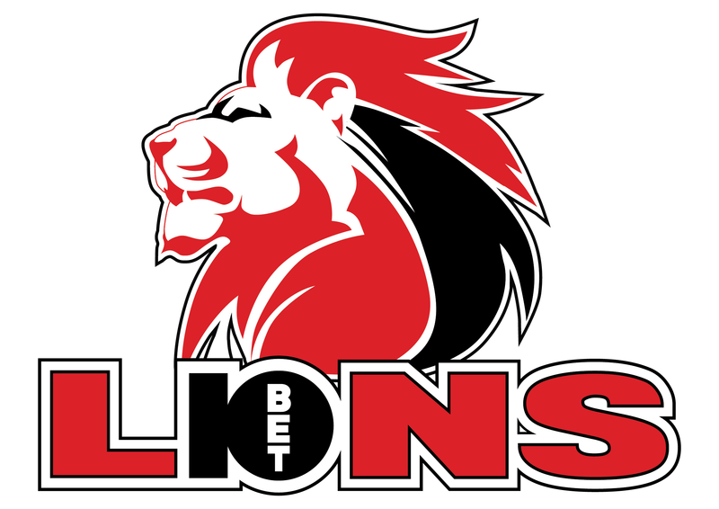
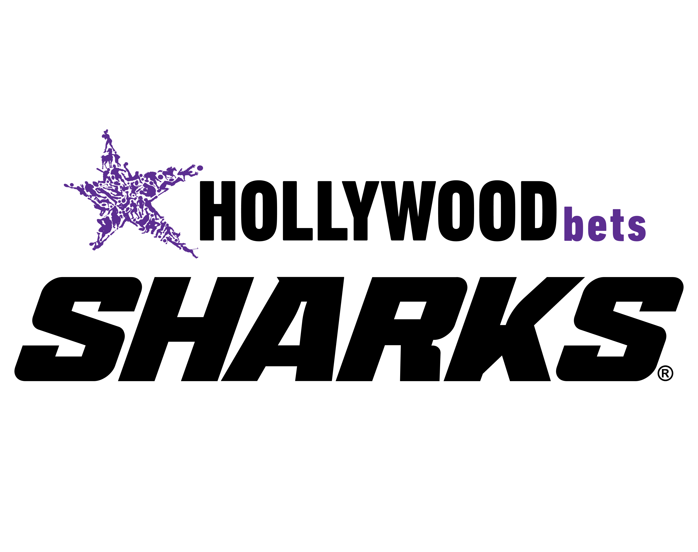
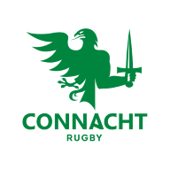
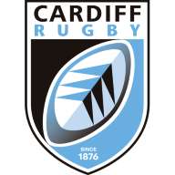
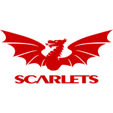
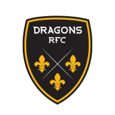
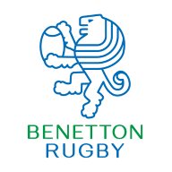
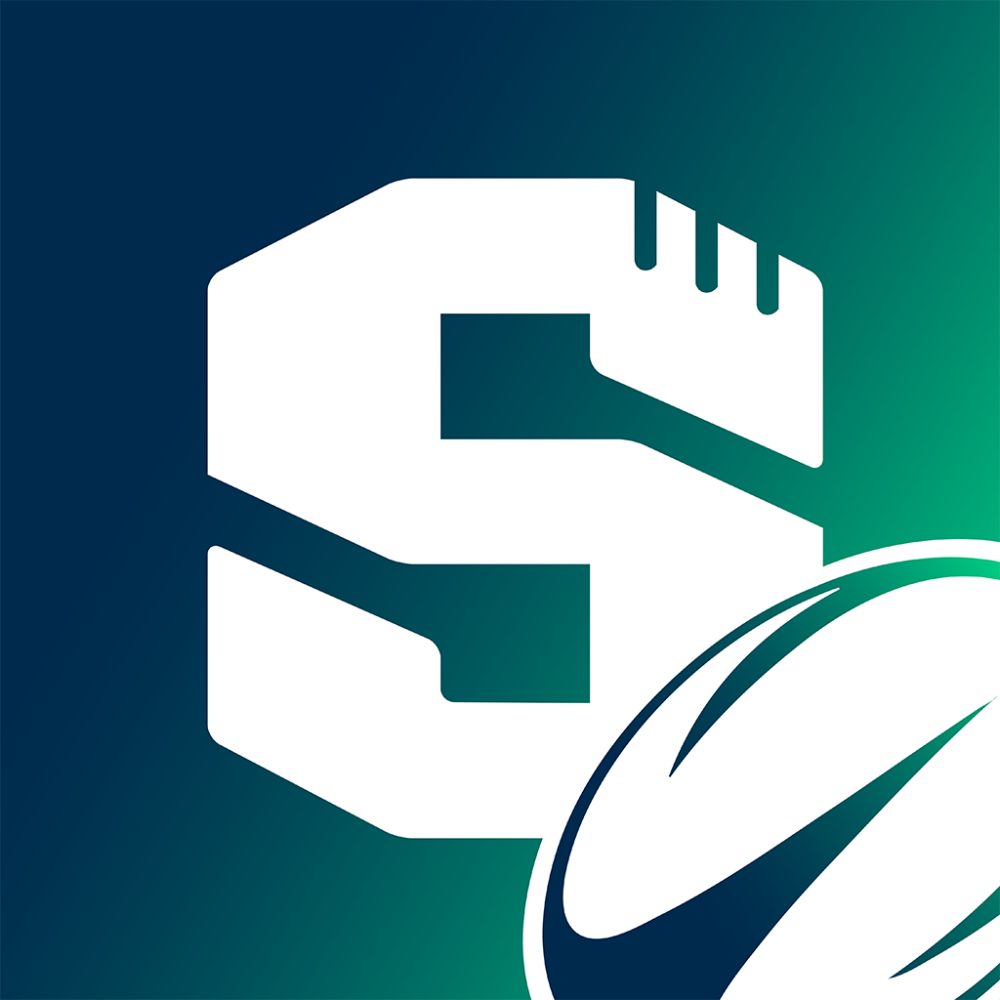

PIELE

A solemn agreement between friends concerning rugby predictions, weekly accountability and the proper custody of a wooden spoon.








The duties of a bru.
We, the members of Piele URC 26/27, establish these rules to preserve fair competition, dependable picks and a proportionate amount of public embarrassment.
1. Name, authority and status
The pool is Piele URC 26/27, competing in the Superbru United Rugby Championship Predictor for the 2026/27 season. Victor Dercksen serves as Pool Captain.
This is a voluntary agreement among friends. Superbru determines game scores and rankings. This Constitution governs the pool's additional duties, ceremonies and disputes. Picks, duties, videos and votes are recorded in The Pavilion, the league's private app (“the app”). No pool sanction changes a Superbru score.
This Constitution was adopted by decision of the league on 25 September 2026 and is in force from that date. It may only be amended under Article 9.
2. Terms of the pool
Our private competition and its administrator. Members are also called brus in this document.
The Superbru round used for the pool. This is the “game week” referred to in our rules.
A submitted prediction of the match outcome and winning margin, or a draw.
The pool standings. Round performance and the cumulative season total are distinct.
Superbru's award for the top eligible performer in a pool for a round.
Our title for last place in a round, with the physical spoon duty in Article 4.
3. The kick-off rule
Every member shall record a pick for each match before that match kicks off. The app locks each pick at the scheduled kick-off. Picks made on Superbru must also be recorded in the app.
A pick missing when its match kicks off is a breach, and a pick Superbru made for the member counts as missing. Missing picks in a round form one breach. A pick the Captain records afterwards does not cure it. Apply Addendum A, A1.
Each member is responsible for checking that every pick has saved. “I was about to do it” shall be received as commentary, not as a submitted pick.
All deadlines are in SAST (UTC+2) and follow Superbru's round grouping; the app shows the official URC kick-off times. Submitted picks stand if a match is postponed. A rescheduled, added or reopened fixture requires a pick before its own kick-off. Nobody is penalised for a pick the app did not make available.
Pick completeness and the Wooden Spoon are separate duties. Missing picks and finishing last in the same round attract two ceremonies under Addendum A.
The spoon must be seen.
4. The Wooden Spoon ceremony
The member finishing last in the pool for a completed round shall hold the Wooden Spoon title for that round. This is based on round performance, not the cumulative season position. Ties are resolved under 4.5.
The Spoon Holder shall upload a video of the required ceremony to the app before the first match of the next round kicks off. The ceremony is defined in Addendum A, A1-A2. For the final round, the Captain sets the deadline when the duty is recorded.
A real wooden spoon must be visibly held in the Spoon Holder's hand throughout the drinking portion of the video. A spoon on a table, an off-camera spoon or a spoon emoji does not satisfy this clause.
A missing, late or non-compliant video is referred to Addendum A, A3-A4. The spoon duty remains outstanding until a video is accepted under Article 5 or the Captain records completion on the member's behalf.
Round points as shown in the app decide the weekly Wooden Spoon once every match of the round is settled. Every member on the round's lowest points shares the title and the duty; if all members finish level, nobody holds the spoon. No retrospective tiebreak is applied.
Possession is insufficient. Visibility is mandatory. Stainless steel has no standing in these proceedings.
5. Video review and conduct
Every ceremony video uploaded to the app is put to the league's vote for 24 hours from its upload. The eligible voters are the league's active members other than the subject and the uploader, fixed at upload. Each may accept the video or veto it with a reason, and may still veto after accepting until the vote closes. Ballots are private.
The video is accepted when more than half of the eligible voters accept it, or when 24 hours pass without a veto. With nobody eligible to vote it is accepted at once. An accepted video completes the duty from the time of upload, or from the completion time the Captain entered when recording it for a member.
A veto stops the vote and refers the video to the Captain, or to the league's named stand-in when the duty or the veto is the Captain's, or otherwise to the app's administrator. Upholding the veto rejects the video and the duty stays open under Addendum A. Dismissing it reopens the vote on the original clock. The Captain may also accept or reject any video directly, never their own.
Glory. And a bus ticket.

6. Season champion and season loser
The member finishing first on the pool's final season leaderboard shall be declared Season Champion of Piele URC 26/27 and receives the Champion's award, presented at the end-of-season function.
A bottle of KWV XX 20 Year Old brandy, custody of the floating trophy for the season, and a Superbru certificate. Any contribution towards the award or the function is agreed separately by the league.
The member finishing last on the pool's final season leaderboard shall be declared the Season Wooden Spoon Holder, also referred to as the overall loser. A tie on the lowest season points is shared in the same way as 4.5.
The overall loser shall travel by bus to a destination selected by the league, wearing a uniform selected by the league, to attend the end-of-season function. The destination and uniform are chosen by the league.
The league shall determine the function's date, venue and budget, and shall give members at least 14 days' notice of the function, the journey and the uniform. Return transport for the Season Wooden Spoon Holder is arranged with the league.
6.5 The brandy mile
The Season Wooden Spoon Holder shall participate in a brandy mile at the end-of-season function, in the league's presence, wearing the approved uniform and carrying the wooden spoon.
Alcohol-free substitutes, declining, or stopping are not permitted. Neither the Captain nor a league vote may override this requirement.
6.6 Final settlement
The season closes when the final ends; default marks stop at that moment (A3). Outstanding duties shall be settled under Addendum A at the end-of-season function, after which the sanctions record closes. If the Season Wooden Spoon Holder cannot attend, the league shall agree a substitute ceremony. The season trophy does not confer disciplinary immunity.
The champion drinks the brandy.
The loser takes the bus.
The sanctions register.
One common procedure for missed picks, overdue spoon duties, invalid videos and conduct findings.
A1. The standard sanction
A confirmed breach attracts one accountability ceremony. The member shall drink a beer. Alcohol-free drinks, non-alcoholic substitutes, and spoken admissions without drinking are not permitted. There is no required volume, speed or finishing requirement. Declining alcohol is not an available option under this Constitution.
A2. Completion and evidence
Every ceremony shall be on camera and uploaded to the app against its duty: the member shall drink beer on camera, and a Wooden Spoon video shall also satisfy Article 4. Alcohol-free substitutes and spoken alternatives are not permitted. Each duty requires its own ceremony and its own video. A missed-pick duty and a Wooden Spoon duty are distinct and are not combined in one video. No additional beers are required for a single duty. Videos are reviewed under Article 5.
| Trigger | Action and deadline |
|---|---|
|
Missing or partial picks
Article 3 |
One ceremony on camera, separate from any Wooden Spoon duty for the same round, before the following round's first kick-off. |
|
Weekly Wooden Spoon
Article 4 |
Video ceremony with the spoon visibly in hand and beer consumed on camera, before the next round's first kick-off (the Captain sets the final round's deadline). Alcohol-free substitutes are not permitted. |
|
Video rejected on review
Article 5 |
Upload a corrected video. The duty stays open and default marks continue until a video is accepted. No additional beer beyond the corrected ceremony. |
|
Conduct finding
Articles 5 and 7 |
The vote specifies a proportionate action and completion date, such as a beer ceremony or other action accepted by the member. Alcohol-free substitutes for a required ceremony are not permitted. |
A3. Weekly default marks
After a duty becomes overdue, one symbolic default mark is added for each full seven-day period it remains unresolved. Marks accrue until the duty is completed or the season closes at the end of the final, and are never drinks, money owed or automatic additional tasks. A duty without a confirmed deadline earns nothing. The record closes at the final function.
A4. Fair administration
The app records the member, duty, evidence, decision, deadline and completion status. A veto or review does not pause default marks. When a decision is reversed in the member's favour, the Captain resets the duty's overdue clock from that moment and the marks accrued meanwhile fall away. Penalties are never backdated. No ceremony may be imposed through threats or coercion.
How the league decides.
7. Conduct reports and the hearing
Conduct violations may be brought to Victor Dercksen, stating the conduct, available evidence and requested action. The member concerned has 24 hours to respond. The Captain then opens a 48-hour poll in the league group.
Each uninvolved member has one vote. The complainant and the subject abstain.
More than half of the eligible voters must take part, and a simple majority of votes cast decides. A tie or a failed quorum imposes no new sanction.
If fewer than two members are eligible to vote, the parties seek a mutually agreed resolution.
A Captain who is the complainant or the subject recuses, and the eligible members choose a chair for that hearing.
An approved sanction is recorded and enforced under Addendum A. Videos are reviewed under Article 5, not under this Article. Addendum A, A4 applies throughout.
8. Evidence and privacy
Ceremony videos are shared within the app, to the league's members only.
A video may not be reposted elsewhere without the permission of the member in it.
Enough evidence is retained for the review processes in Articles 5 and 7. Deletion is agreed by the league at season-end.
9. Membership and amendments
The Captain confirms the starting member list and each member's acceptance of this Constitution.
An amendment is published before it takes effect and requires approval from two-thirds of the full membership.
No rule is applied retrospectively.
Late-entry eligibility is agreed by the league before a new member is admitted.
One bru, one vote.
The subject of the vote keeps quiet.
Adoption and the record.
Record of adoption
This Constitution was adopted by the members of Piele URC 26/27 on 25 September 2026 and is in force from that date. The Captain keeps the adopted version and the member approval record. Later amendments follow Article 9 and are recorded below the original adoption.
Superbru terminology and design references
Official terminology includes picks, pools, rounds, leaderboards, Pool Captain and Yellow Cap. Rugby scoring also uses Win Point (WP), Margin Point (MP), Bonus Point (BP) and Grand Slam Point (GSP). The live tournament and pool settings govern scoring. This Constitution does not prescribe point values.
Gameplay: Superbru URC Predictor · URC How to Play · Yellow Cap explanation · Rugby scoring terminology.
Visual references: Superbru supplies the S symbol, wordmark, Rugby icon and jersey illustrations. Its Titillium Web type, orange accents and charcoal inform the layout, with slate-blue page edges. Club crests are sourced from EPCR's Champions Cup and Challenge Cup club directories. Club marks belong to their respective owners.


References checked 22 September 2026. The league crest was supplied by the organiser. Superbru and its logo are registered trademarks of SportEngage Ltd. This is an independent friends' pool document with no claim of official endorsement. “TMO review” and the ceremonial duties are house terminology.